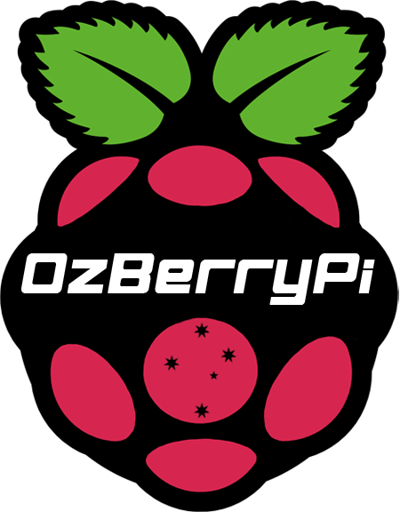
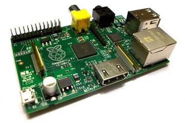
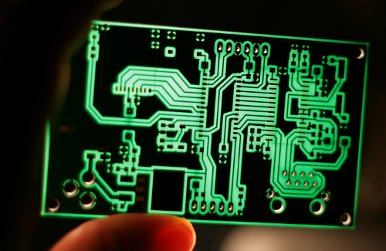
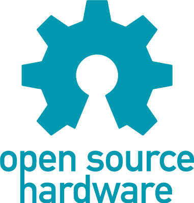
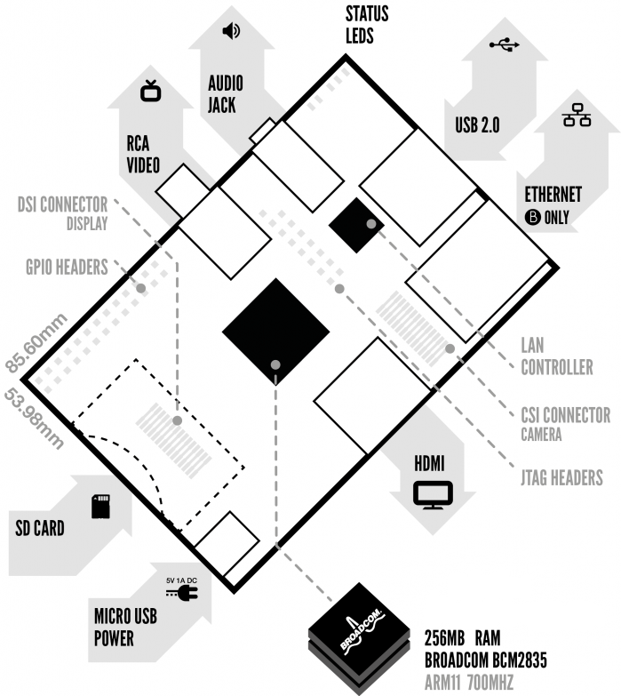
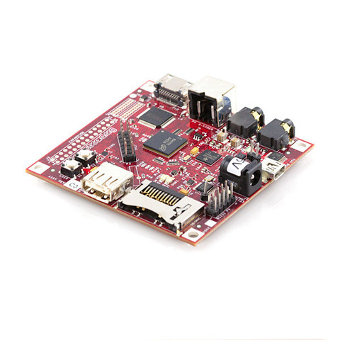
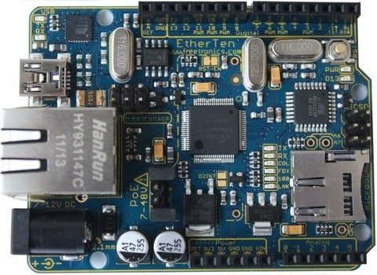
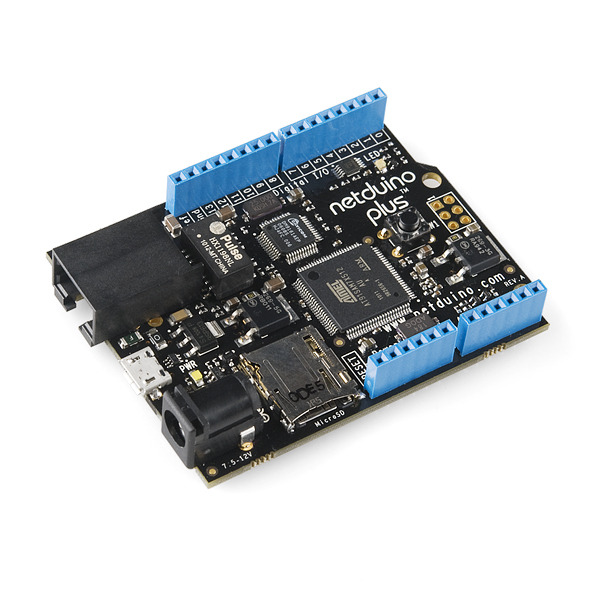
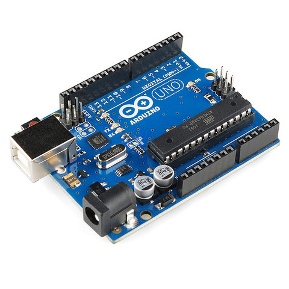

Welcome to Sydney's first Raspberry Pi User Group August 2012

Something had changed the way kids were interacting with computers. A number of problems were identified ... and the rise of the home PC and games console to replace the Amigas, BBC Micros, Spectrum ZX and Commodore 64 machines that people of an earlier generation learned to program on.


Open Source Hardware + Open source software (GNU/Linux)
Open source hardware (OSHW) consists of physical artifacts of technology designed and offered in the same manner as free and open source software (FOSS).
Almost... The Broadcom micro is still closed :(
The RaspberryPi Model B - $35 AUD
<
Quick Specs
- SOC: ARM11 Broadcom (CPU + GPU) @ 700 MHz
- Memory: 256 MiB
- Video outputs: Composite RCA, HDMI (one at a time)
- Audio outputs: 3.5 mm jack, HDMI
- Onboard Storage: SD
- Onboard Network: 10/100 wired Ethernet
- Low-level peripherals: GPIO,SPI, I²C, I²S[2], UART
- Real-time clock: Nope!
- Power: 700 mA, (3.5 W)
What about other options...

Beagle board - $173 - ARM @ 600MHz, HD-video

EtherTen 100% Arduino compatible - $70 - ATmega328P @ 16MHz

Netduino Plus with ethernet - $73 - ARM 7 @ 48Mhz

Arduino Uno - $32 - ATmega328 @ 16MHz
Lets see some awesome projects for the RPi...
http://elinux.org/RPi_Projects
have you noticed it's in 3D*?